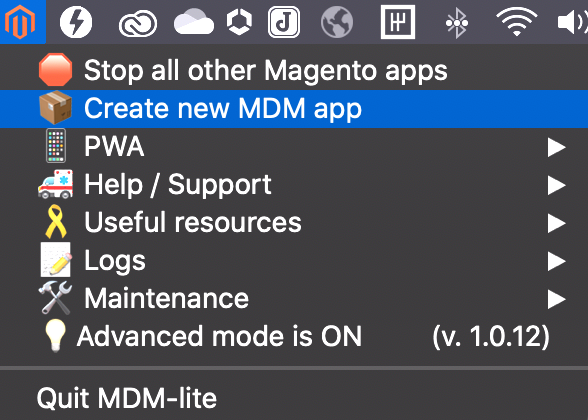

<div id="mdm-tab">
  
  </a>
  <br><br>
  With MDM-lite, you can:
  <ul>
    <li>- quickly clone your existing envs</li>
    <li>- run the PWA against remote back-ends</li>
    <li>- get support access for your local system</li>
  </ul>
  <br><br><br><br><br><br><br><br>
</div>